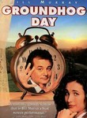
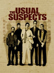

Yahoo's 100 Movies to See Before You Die (1990-2009)
http://movies.yahoo.com/feature/100-movies-to-see-before-you-die-modern-classics.html
See also: http://movies.yahoo.com/feature/100-movies-to-see-before-you-die.html
List contains: 102 items, 210.6 hours.
See also: http://movies.yahoo.com/feature/100-movies-to-see-before-you-die.html
List contains: 102 items, 210.6 hours.
Stephen Klancher
...has seen 67
...has seen 140 hours
...has not seen 70.7 hours

Timeline - Covers
Most Recent:
Michael Clayton
First Unseen:
Thelma & Louise (# 6)
...has seen 67
...has seen 140 hours
...has not seen 70.7 hours
Timeline - Covers
Most Recent:
Michael Clayton
First Unseen:
Thelma & Louise (# 6)
1.

Goodfellas (1990)
Stephen Klancher: SEEN 
I remember choosing to <i>not</i> watch this with Brett, then watching it maybe a year later and thinking I was stupid for missing out on it. Cool movie!


4.

The Silence of the Lambs (1991) Releases on 1991-02-14


12.

Unforgiven (1992)
Stephen Klancher: SEEN
We watched this movie in Mr. Ruff's English class as part of a style comparison of this and another western of a much different tone, Shane. For me, the style of Unforgiven comes down to the line "Deserve's got nothin' to do with it." This was the first Western I have a distinct memory of watching. Prior to this I just had a vague assumption that I didn't care for Westerns, but this and a few others put me on the road to realizing how awesome they can be.
14.

Groundhog Day (1993) Releases on 1969-12-31
Stephen Klancher: SEEN
The joke is obvious but it's also the truth: I watched this movie over and over and over. This was one of a handful of movies we rewatched frequently growing up at my dad's house. I love Bill Murray and I love this movie.
15.

Schindler's List (1993)
Stephen Klancher: SEEN
I watched this in my 9th grade history class. Liam Neeson back when his only power was being German. No force, no lightsaber. But seriously, this is a serious movie. I don't remember much of the specifics at this point, but watching Life is Beautiful more recently made me think of watching this.


20.

Pulp Fiction (1994) Releases on 1994-10-14
Stephen Klancher: SEEN
Very fun. Reading Quentin Tarantino and Philosophy (http://www.amazon.com/Quentin-Tarantino-Philosophy-Popular-Culture/dp/0812696344) made it even more so.
21.

The Shawshank Redemption (1994)
Stephen Klancher: SEEN
I'm not sure it forever deserves the top spot on IMDB, but definitely a good movie. I remember watching it on TV some night in Jr High when I was supposed to be working some project... let's see, do a diorama of a scene from 1984 or watch Shawshank? Hmm...
22.

Three Colors: Red (1994)


29.

Toy Story (1995)
Stephen Klancher: SEEN
Pixar is always pretty solid and Tim Allen plus Tom Hanks make for some fun recognizable voice acting.
30.

The Usual Suspects (1995) Releases on 1969-12-31
Stephen Klancher: SEEN
I remember thinking this was a really cool movie back when I watched it at Nick's house in high school. To be honest I can't remember much about it now, just the feeling that it was really cool... and seeing Spacey suddenly stop limping...


40.

Trainspotting (1996)
Stephen Klancher: SEEN
The "Choose life" intro sticks in my head. Crazy movie. I think I watched it because my high school English teacher Mr. Ruff had a poster of it. Come to think of it, I wanted to watch all the movies of which he had posters on the walls. That was the first movie list I aspired to complete, but I transposed it with the IMDb list because ease of access and significant overlap. Hmm.


45.

Titanic (1997)
Stephen Klancher: SEEN
Not a bad movie, but since I was in junior high when this came out, I can only associate it with fawning girls. Though I don't think that was really limited to junior high.
46.

The Big Lebowski (1998) Releases on 1998-02-15
Stephen Klancher: SEEN
Brett introduced me to Lebowski and I have since watched it many times. Love it.


52.

American Beauty (1999)
Stephen Klancher: December 31, 2002
Fantastic movie. Many good quotables. I tend to rather watch something new instead of rewatching anything, but if I see this on I'm completely unable to pull myself away.

55.

Fight Club (1999)
Stephen Klancher: SEEN
There's so much that is cool about this movie. But mostly the impact of the reveal the first time you watch it. The sort of Sixth-Sense change where you can then rewatch it as an entirely different experience.
56.

The Matrix (1999)
Stephen Klancher: SEEN
My parents (divorced) got in an argument over this movie. My dad wanted to take me to see it, but my mom, more strict at the time, didn't want it to happen. At some point she finally gave in, but then we had to go see it in the cheaper, crappier theater. It was still amazing, of course. And as Bob can attest, at any given time my dad's house on Mountain Oak probably had the DVD of this or Fifth Element playing. It's too bad they never made any sequels to this. <i>None. Never.</i>


59.

The Sixth Sense (1999)
Stephen Klancher: SEEN
Probably spoiled for anyone who didn't see it soon after it came out, but a well done twist made this fun. Plus there's the iconic "I see dead people" line.


63.

Crouching Tiger, Hidden Dragon (2000)
Stephen Klancher: SEEN
I remember being so pleased when I watched this and, without looking at the subtitles, I understood the phrase "I don't know" spoken in Chinese.

66.

Donnie Darko (2001) Releases on 1969-12-31
Stephen Klancher: SEEN
I remember getting mad because I was watching this at Alyson's house with a group where half of the people were really interested in the movie and the less interested half were making it hard to hear and enjoy it. Regardless it was fun. I always looked for more meaning in it than I was able to find though. But it created a great atmosphere and was a lot of fun to watch.
67.
In the Mood for Love (2001) Releases on 2001-02-26
Stephen Klancher: January 11, 2011
I loved the style throughout: the music with the slowed walking scenes, odd or cramped camera angles, even Mrs. Chan's style of dress was cool.
68.
The Lord of the Rings: The Fellowship of the Ring (2001) Releases on 2001-12-19
Stephen Klancher: SEEN
I read half-way through the books, quit for a while, then finished right before this came out. I actually like the movies better. I enjoy all three movies, but one notable thing about this one was much fun it was that everyone around me was really into it at the time. The fact that the girls I was friends with and girlfriend at the time were drooling over the actors just added another reason for everyone to be enthusiastic and want to keep rewatching it. So yeah, fun times. :-)
69.

The Lord of the Rings: The Two Towers (2002) Releases on 2002-12-18
70.

The Lord of the Rings: The Return of the King (2003) Releases on 2003-12-17
Stephen Klancher: December 17, 2003
Probably my favorite of the trilogy, but they are all fantastic.
71.

Memento (2000) Releases on 2000-10-11
Stephen Klancher: SEEN
Showing events out of chronological order can range from confusing to really cool. Memento used it in a gimmicky way, but it turned out great.
72.

Mulholland Dr. (2001)
73.

The Royal Tenenbaums (2001) Releases on 2001-12-14


76.

City of God (2002) Releases on 2004-02-13
Stephen Klancher: SEEN
I got a hold of this movie because of Erin near the beginning of college, although I can't remember for certain if I watched it with her or not. The main impression I remember about this movie is that it was vivid both in color and content.
78.

Finding Nemo (2003)
Stephen Klancher: SEEN
The main thing I remember about this movie was that it had very pretty color. And I think I watched it with a few other people in the common room of our floor of my freshman dorm.
79.

Anchorman: The Legend of Ron Burgundy (2004) Releases on 2004-07-09
80.

Eternal Sunshine of the Spotless Mind (2004) Releases on 1969-12-31
Stephen Klancher: SEEN
I love this movie. Would I zap my brain? Probably. Maybe I already did. How would I know? Whatever. I love this movie.


85.

A History of Violence (2005) Releases on 2005-09-30
86.

Oldboy (2003) Releases on 1969-12-31
Stephen Klancher: SEEN
This was a pretty mindfuck movie when I first saw it. I'd still like to watch the sequel/prequel at some point.
87.

Borat: Cultural Learnings of America for Make Benefit Glorious Nation of Kazakhstan (2006) Releases on 2006-11-03
Stephen Klancher: November 9, 2006
I did think this was funny, but I clearly did not think it was as funny as the rest of the theater.
88.

Children of Men (2006)
Stephen Klancher: SEEN
I remember thinking halfway through watching this movie that it had built a very interesting situation. And then it just lost my interest. It built an interesting world though. The death of the worlds youngest person in the beginning immediately grabbed my attention.

90.

Pan's Labyrinth (2006) Releases on 2007-01-19
Stephen Klancher: January 27, 2007
This was disappointing to me because I wanted the whole movie to be like the fantasy scenes on which the trailer focused. Also "Pan's Labyrinth" became a pronouncement of intention to crush a man's face with a bottle as was done in this movie.


93.

The Diving Bell and the Butterfly (2007)
Stephen Klancher: March 18, 2010
Especially in the beginning, some of this was really hard to watch because it was through his perspective and his vision would dim, his eye would wander, and of course he would blink a lot. But then there are worse ways to spend time than watching beautiful women smiling and making eye contact while reciting the alphabet in French. Interesting movie overall.
94.
Michael Clayton (2007)
95.

No Country for Old Men (2007)
Stephen Klancher: November 19, 2007
Wow, this was cool. The ending was kinda like, "wait, what?" but the bad guy Anton was very memorable. "What's the most you ever lost on a coin toss?"
96.

There Will Be Blood (2007)
Stephen Klancher: April 17, 2008
Omg he'll drink your milkshake. Really, he'll do it. I think there may have been a good movie here. But all I remember is that he'll drink your milkshake.
97.

The Dark Knight (2008)
Stephen Klancher: July 19, 2008
Saw on the IMAX twice on the first Saturday after release. OMG so good! Got a picture of me with the Joker at the theater too.
98.

Slumdog Millionaire (2008)
Stephen Klancher: February 15, 2009
Fantastic music and a very well put together movie. I can see why it was so well liked.
99.

WALLE (2008)
Stephen Klancher: July 27, 2008
I saw this with Tim and his wife at the tail end of its theater run. Cute movie and the first half or so is another good example of how much can be communicated with no verbal dialog.
100.
Avatar (2009)
Stephen Klancher: January 9, 2010
The plot is basically FernGully, which isn't a major criticism, it just follows an unsurprising path. The visuals were amazing. The 3D was very cool, but even without that the environments were incredible. It made me think of exploring new areas in World of Warcraft for the first time.

102.

Inglourious Basterds (2009)
Stephen Klancher: August 23, 2009
Brad Pitt was fun but Col. Landa (Christoph Waltz) was great. Some of the violence was pretty gruesome even considering it was Terantino. It made me remember having read someone comparing the Nazis watching Nation's Pride cheering the violence against the Allied soldiers to the audience cheering the violence on screen against the Nazis. Anyway, the inferno was pretty impressive and the face projected on the smoke was creepy cool.